WebGL
Let's make the web dance
Reveal.js
http://lab.hakim.se/reveal-js/#/What is WebGL?
The cube in the previous slide!
ok,
WebGL (Web Graphics Library) is a JavaScript API for rendering interactive 3D graphics and 2D graphics within any compatible web browser without the use of plug-ins
Fun Facts
- Based on OpenGL ES 2.0
- Context of HTML Canvas
- A fast way to put lots of triangles,
lines and points on the screen - Lets you draw awesome stuff
Supported browsers
Desktop:
- Firefox 4+
- Chrome 9+
- Safari 5.1 OS X Lion (disabled by default)
- Opera 12 pre-release
What about IE?
partially supported in Internet Explorer 11
Mobile:
- Firefox 4+
- Firefox OS
- BlackBerry PlayBook 2.0
- Chrome 25+
- Ubuntu Touch
- WebOS
- Safari (OS 8)
- Opera 12 (Android)
- Internet Explorer (Windows Phone 8.1?)
What really WEbgL is?
OpenGL + JavaScript
What is OpenGL?
A standard specification defining a cross-language, cross-platform API for writing applications that produce 2D and 3D computer graphics.
OpenGL Nouns
- Vertices
- Primitives
- Matrices
- Textures
- Blending (Alpha)
- Buffers
- Shaders
Vertices & Primitives

Matrices
Used to represent transformations
-
ModelView Matrix
position / scale / rotation
-
Projection Matrix
Defines a clipping volume
Textures
Just an image that you map to a set of vertices
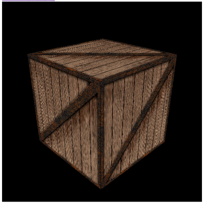Buffers
There are many different kinds of buffers, but
for the most part they're just chunks of memory.
The ones you care about are:
- Array Buffers
- Frame Buffers
Shaders
- Not just for shading
- Programs that run per-vertex or
per-fragment (think "pixel") on the GPU - Run entirely on your graphics card's GPU
What it doesn't have
- Camera System
- Audio
- Text/Fonts
- Networking
Let's move a cube
and see how it works
We create a buffer to store:
- Vertices
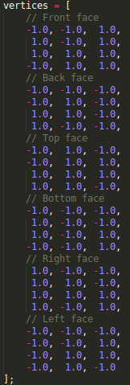 - Colors
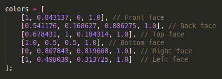 - CubeVertexIndices
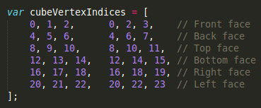
Then, we create the scene by telling WebGL:
- Perspectives
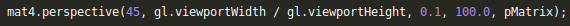 - xyz object's position
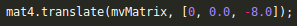 - xyz rotation coordinates
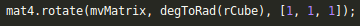 - Finally we add the animation
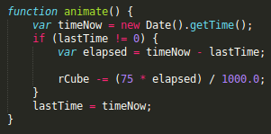
Low level, right?
Let's talk about libraries
- Get things done faster
- Easy to use
- Write less code
- More features
Three.js
A JS 3D Library which makes WebGL simpler
All we need is
- Set the camera
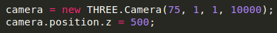 - Set the object
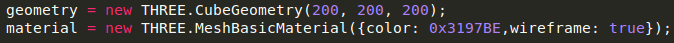 - Render object in canvas
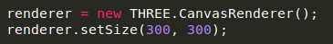 - Add animation
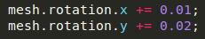